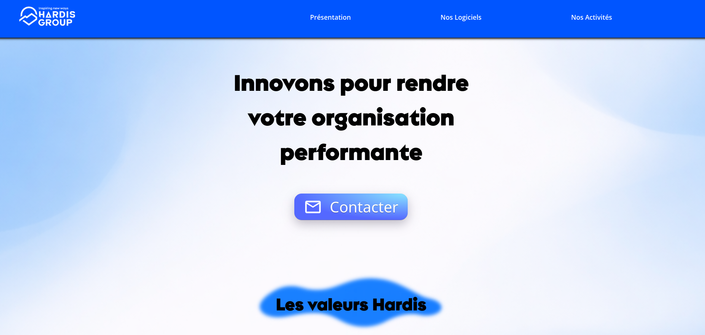
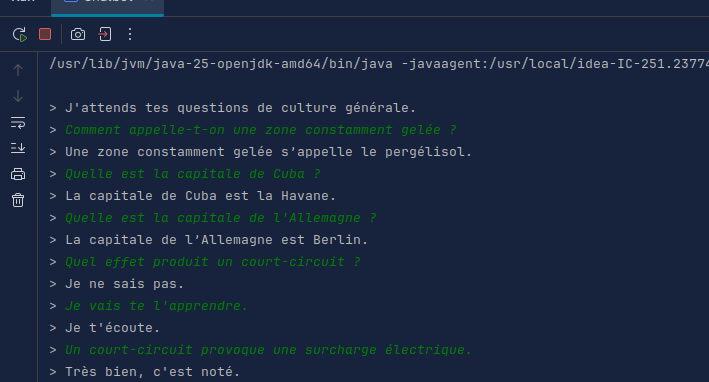
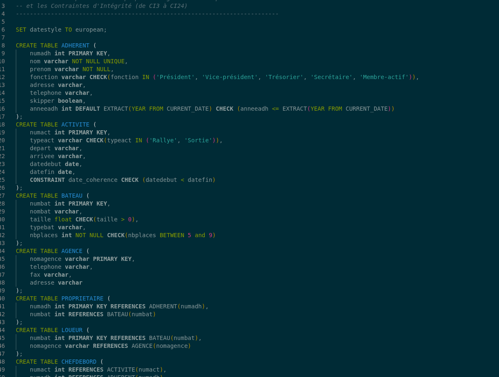
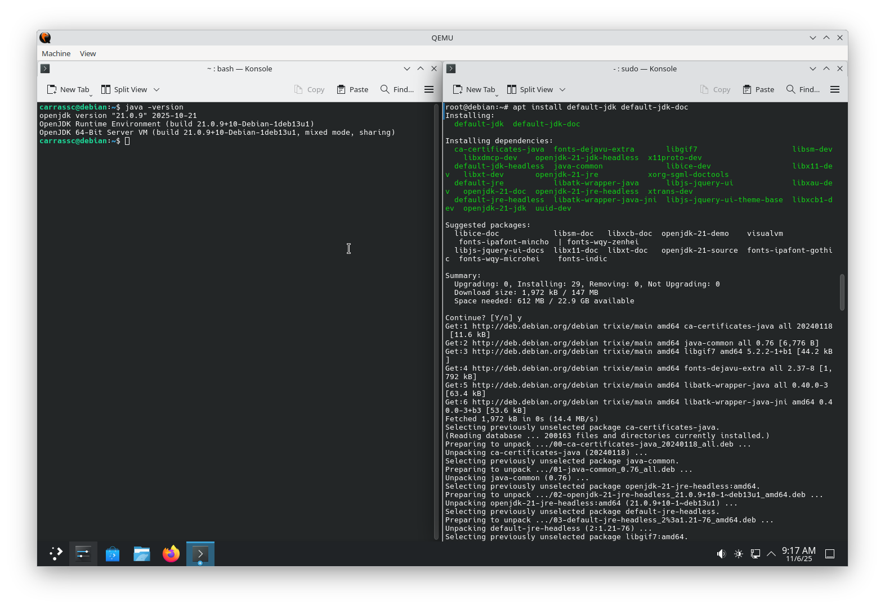

Clement Carrasso
Etudiant en BUT informatique a l'IUT2 de Grenoble
Site internet Hardis
Conception d'un site internet fictif pour l'ESN Hardis. Dans le cadre d'un projet universitaire, j'ai étéchargé de la conception et du développement de pages web (présentation de l'entreprise, formulaire de contact), de l'intégration front-end en HTML/CSS, de l'amélioration de l'expérience utilisateur et de la navigation du site.

Compétences
- Travail en équipe
- Développement en HTML CSS
- Analyse des besoins du client
- Remise du site au client (présentation)
Chatbot en Java
Programmation d'un chatbot en Java capable de répondre à des questions de culture générale et d'apprendre des nouvelles réponses

Compétences
- Travail en équipe
- Développement en Java
- Analyse de la complexité d'un programme
- Soutenance et présentation finale du chatbot
Création d'une base de données
Création d'une base de données SQL pour un club fictif de bateau à voile. Sous forme de projet étudiant, nous avons en binôme réalisé différentes étapes de la conception d'une base de données en SQL.

Compétences
- Travail en équipe
- Utilisation de PostgreSQL
- Rédaction d'un rapport
- Respect des délais
Installation d'un poste linux pour le développement
Installation et configuration d'une machine virtuelle linux servant d'outil de développement. En suivant une documentation, j'ai dû installer et configurer une machine virtuelle Debian afin qu'elle puisse servir au développement.

Compétences
- Utilisation d'un shell linux
- Autonomie
- Présentation finale sous forme de carte mentale